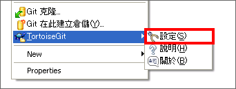
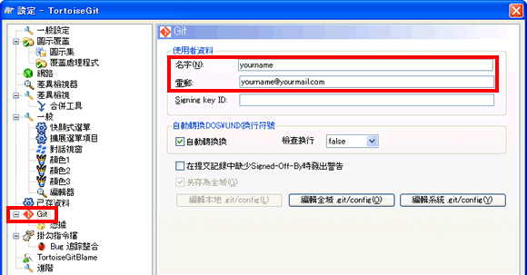
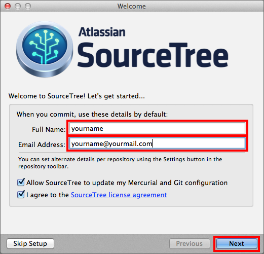
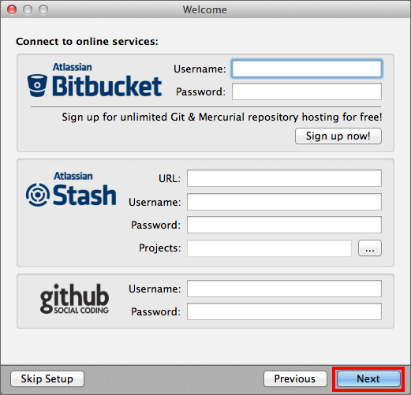
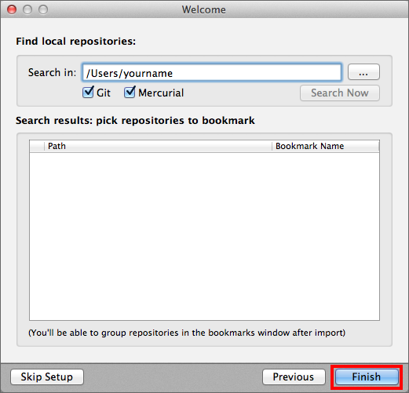

安裝Git之後，請設定用戶名稱和電子郵件地址，這個動作在只需要做一次就行了，這些資訊將作為提交者資訊顯示在歷史記錄中。
Windows
點一下右鍵選單的TorotiseGit > 設定

會顯示設定的畫面。請在Git頁面的使用者資料欄中填入名字和電子郵件。

安裝Git之後，請設定用戶名稱和電子郵件地址，這個動作在只需要做一次就行了，這些資訊將作為提交者資訊顯示在歷史記錄中。
Mac
啟動已安裝完成的SourceTree，接著會出現以下的畫面，請跟著設定引導輸入您的名字和電子郵件，完成後點擊Next。

接著，您會被要求輸入Github和Bitbucket的資料，您可以跳過這個步驟，直接點擊Next。

在以下畫面不要輸入任何文字直接點一下 Finish。

安裝Git之後，請設定用戶名稱和電子郵件地址，這個動作在只需要做一次就行了，這些資訊將作為提交者資訊顯示在歷史記錄中。
主控台
Git的設定會被記錄在用戶的目錄首頁下的.gitconfig檔案裡。雖然可以直接編輯此檔案，但在這裡我們要用config命令來設定。
$ git config --global user.name "<使用者名字>"
$ git config --global user.email "<電子信箱>"
這個命令，可以設定Git的輸出(output)結果的顏色。
$ git config --global color.ui auto
可以為Git的命令設定別名，例如：「checkout」可以省略為「co」來執行。
$ git config --global alias.co checkout
Note
在Windows使用主控台（Git Bash）的話，含有中文的檔名會顯示為
"\346\226\260\350\246..."添加以下的設定，讓含有中文的檔名可以正確顯示。
$ git config --global core.quotepath off
而且在Windows使用主控台時不可以輸入中文。所以在提交訊息時要使用中文的話，不要使用
-m 參數，要用外部編輯器來輸入。
外部編輯器必須使用文字編碼為UTF-8，並使用換行字元為LF。
git config --global core.editor "\"[外部編輯器的路徑]\""